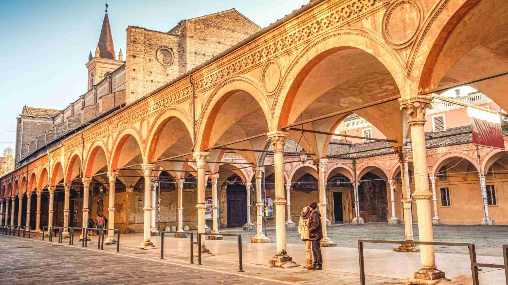
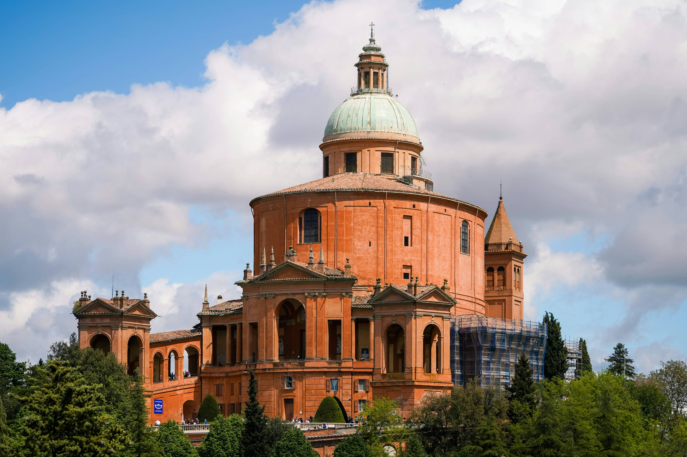
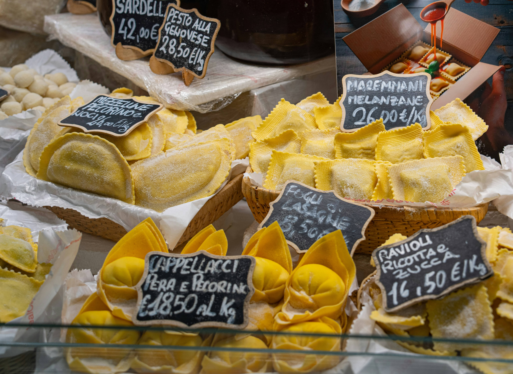
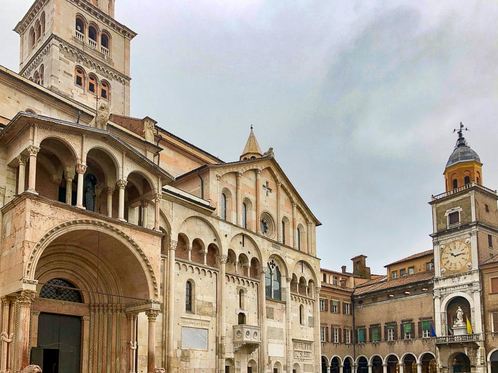
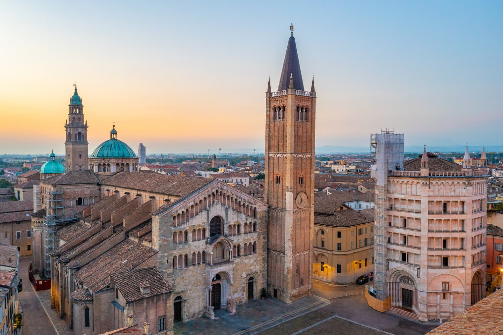
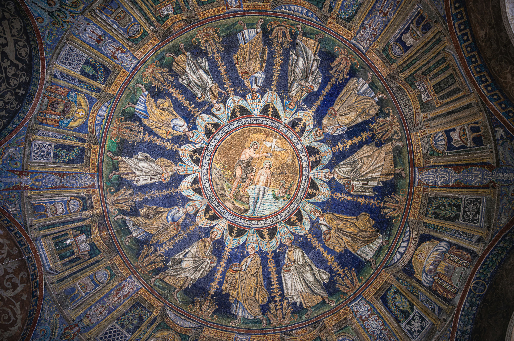

Bologna is Italy's best-kept secret — and Italians know it. While the tourist crowds swarm Rome and Venice, Italians consistently name Bologna as the city they'd most like to live in: beautiful medieval architecture, 40km of covered porticoes, Europe's oldest university still in operation, and a food culture so extraordinary it earned the city its nickname La Grassa — "the fat one." This is where ragù, tortellini, mortadella, and tagliatelle were born. Coming here without eating is like going to the Vatican without looking up.
Bologna at a Glance
- Nicknames
- La Rossa (the red), La Dotta (the learned), La Grassa (the fat)
- Best for
- Food lovers, architecture, authentic Italian city life
- Don't miss
- Mercato di Mezzo, climbing the Asinelli Tower, a real ragù
- Avoid
- Any restaurant advertising "spaghetti bolognese" — it doesn't exist here
- Budget / day
- €60–130 (cheaper than Florence or Rome)
Why Bologna Deserves More Attention
Bologna gets a fraction of the tourists that Florence receives — despite being just 35 minutes away by high-speed train. That gap is closing, but for now the city remains refreshingly real: locals outnumber tourists in every piazza and restaurant, prices are lower than other major Italian cities, and the food is — by almost universal Italian consensus — the finest in the country.
The city's famous porticoes — 40km of covered arcaded walkways, UNESCO-listed since 2021 — mean you can walk from the station to the city centre entirely under cover, rain or shine. This practical genius has shaped Bolognese street culture for 700 years.
Top Attractions in Bologna
Piazza Maggiore
Bologna's vast medieval heart — surrounded by the Basilica di San Petronio, the Palazzo Comunale, and the Fountain of Neptune. Best at aperitivo hour when students fill the steps and the red-brick facades glow in the evening light.

The Two Towers
Bologna's medieval skyscrapers — the Asinelli (97m) and the Garisenda (leaning, now closed). Climb the Asinelli's 498 steps for the finest panoramic view in Emilia-Romagna. Book tickets online — queues can be long in summer.

Mercato di Mezzo
Bologna's historic covered market, selling mortadella, Parmigiano-Reggiano, fresh pasta, and local charcuterie. A sensory experience unlike any supermarket — the smell of aged cheese and cured meat hits you 20 metres from the door.

University of Bologna
Founded in 1088 — the oldest university in the world, still operating. The Palazzo Poggi museum houses extraordinary anatomical theatres and early scientific instruments. The student energy gives Bologna a vitality rare in Italian heritage cities.

40km of Porticoes — UNESCO Since 2021
Bologna's covered arcaded walkways are unique in scale and ambition. The longest single portico — leading to the Sanctuary of San Luca — runs for 3.8km up a hillside and contains 666 arches. Walking it at sunrise, before the city wakes, is one of Italy's great undiscovered experiences.
The Perfect 2-Day Bologna Itinerary
Piazza Maggiore, the Towers & the Market
Start with an espresso standing at a bar near Piazza Maggiore. Visit the Basilica di San Petronio (the world's fifth largest church, free entry). Then the Asinelli Tower — climb it before 10am for the best light and no queues. Midday: lose yourself in Mercato di Mezzo and the surrounding medieval streets. Lunch at a trattoria — order tagliatelle al ragù, not spaghetti bolognese. Afternoon: the Palazzo Archiginnasio with its extraordinary anatomical theatre (€3). Aperitivo in Piazza Maggiore at 6pm watching the city settle into its evening rhythm.

San Luca Sanctuary, the Porticoes & a Food Tour
Take the 3.8km portico walk up to the Sanctuary of San Luca — or take the cable car (San Luca Express) if you prefer. The panoramic view over Bologna's red rooftops is extraordinary. Afternoon: a self-guided food walk through the Quadrilatero district — the dense grid of medieval streets between Piazza Maggiore and Via Rizzoli, packed with specialist food shops, cheese vendors, and wine bars. Book an optional cooking class in the evening — making fresh pasta here is an experience worth the cost.
Authentic ragù alla Bolognese is served on tagliatelle — never spaghetti. The recipe is officially registered with the Bologna Chamber of Commerce (seriously). Any restaurant serving "spaghetti bolognese" is signalling immediately that it does not take its food seriously. Walk away.
Food — The Real Reason to Come to Bologna
Italy is full of cities that claim great food. Bologna is the only one that every other Italian city acknowledges as the winner. The region of Emilia-Romagna produces Parmigiano-Reggiano, Prosciutto di Parma, Mortadella di Bologna, Aceto Balsamico di Modena, and Lambrusco wine. Bologna is the capital of all of it.

Tortellini in Brodo
Pork-filled pasta in clear beef broth — the definitive Bolognese dish.

Tagliatelle al Ragù
The real bolognese — slow-cooked meat, silk pasta, no spaghetti.

Mortadella
Bologna gave its name to this spiced pork sausage. Eat it fresh, sliced thick.

Parmigiano-Reggiano
Buy a wedge from a specialist shop and eat it with local honey and walnuts.
- Where to eat: Trattoria Anna Maria, Osteria dell'Orsa, and Trattoria di Via Serra are all excellent and reasonably priced. Avoid anything within 50 metres of Piazza Maggiore that displays photos on its menu.
- Mercato delle Erbe: The covered market near Via Ugo Bassi — more local than Mercato di Mezzo, with a great selection of fresh produce, wine, and prepared foods for a cheap lunch.
- Lambrusco: The local sparkling red wine, served slightly chilled. Ignored for decades, now one of Italy's most exciting wine regions. Try it with mortadella and bread as the Bolognese have done for centuries.
- Gelato: Cremeria Funivia and Galliera 49 are consistently the best in the city.
Day Trips from Bologna

Modena
Home of Enzo Ferrari, balsamic vinegar, and Osteria Francescana — the world's best restaurant. 17 mins by train.

Parma
Prosciutto di Parma, Parmigiano-Reggiano, and a strikingly beautiful Baptistery. 55 mins by train.

Ravenna
Byzantine mosaics so extraordinary they inspired Dante — 8 UNESCO sites in one small city. 1h 20m by train.
Practical Tips
- Bologna is significantly cheaper than Rome, Florence, or Venice — a excellent meal costs €15–25 per person, and accommodation is 30–40% less expensive.
- The city is highly walkable — the entire historic centre can be crossed on foot in 20 minutes, and the porticoes make every walk comfortable regardless of weather.
- Bologna is a major rail junction — it's the most conveniently located city in Italy for multi-city trips, with fast trains to Florence (35 min), Venice (1h 30m), Rome (2h), and Milan (1h).
- The university population of 100,000 students gives the city an energy and nightlife scene that most heritage cities lack. Bars around Via del Pratello and Via Zamboni stay lively until late.
- Book the Asinelli Tower climb online (torriBologna.it) to avoid queues, especially in summer.